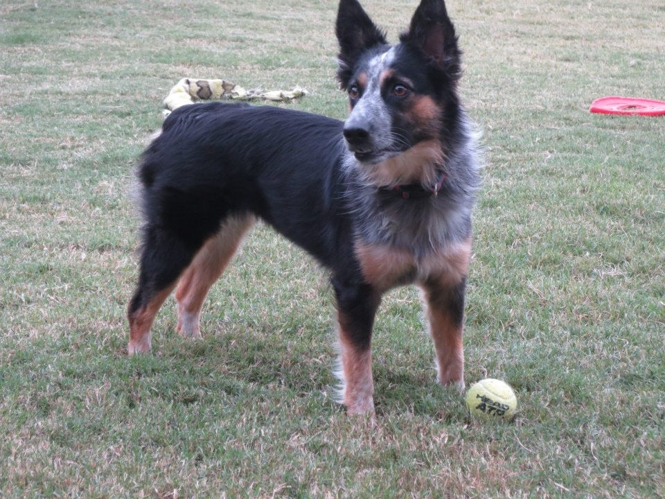
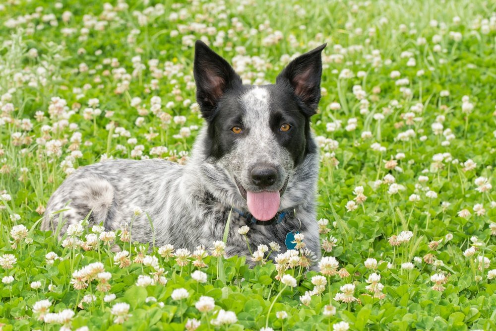
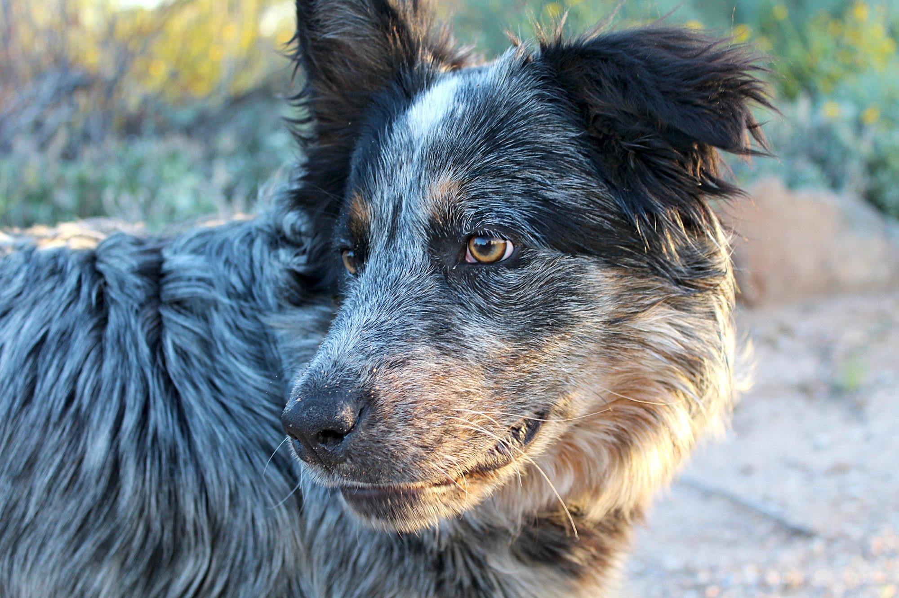

AAP Image Gallery
AAP Media
The Texas heeler is a whip-smart, lightning-fast herder with energy to spare. Their life spans are typically between 12 and 15 years. Texas heelers are a compact and sturdy built medium sized dog that is extremely athletic with a protective, weatherproof double coat. Their fur can be solid in color, but is most often mixtures of white, grey, blue, black, blue merle, and brown. Their coat regulated their temperature in both hot and cold weather.
 Learn More...AAP Gallery
If you get a group of Texas heelers together, it is entirely possible that no two will share the same color coat. Texas heeler puppies have floppy ears at birth but after a few weeks, they perk up and remain straight and pointy. while Texas heelers love their people deeply, they can be wary of strangers and tend to alert their family to someone unfamiliar.
 Learn More...AAP Blog
When it comes to this mix—and any hybrid breed—it's particularly important to research your Texas heeler breeder due to the prevalence of puppy mills in the designer dog market. Unprincipled breeders often take advantage when breeds, including crossbreeds, become more popular. This can lead to breeding dogs in inhumane conditions without providing for their health and well-being the way responsible breeders do.
 Learn More...